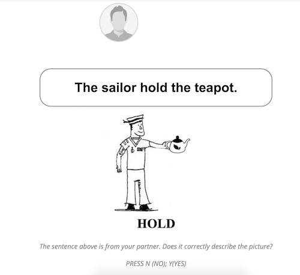

	<!DOCTYPE html>
<html>

<head>
  <script src="jspsych-6.0.5/jspsych.js"></script>
    <script src="jspsych-6.0.5/plugins/jspsych-html-keyboard-response.js"></script>
    <script src="jspsych-6.0.5/plugins/jspsych-html-button-response.js"></script>
    <script src="jspsych-6.0.5/plugins/jspsych-image-keyboard-response-loading.js"></script>
    <script src="jspsych-6.0.5/plugins/jspsych-image-button-response.js"></script>
    <script src="jspsych-6.0.5/plugins/jspsych-survey-text.js"></script>
    <script src="jspsych-6.0.5/plugins/jspsych-image-text.js"></script>
    <script src="jspsych-6.0.5/plugins/jspsych-fullscreen.js"></script>
    <script src="jspsych-6.0.5/plugins/jspsych-categorize-image.js"></script>
    <script src="jspsych-6.0.5/plugins/jspsych-categorize-image-asp.js"></script>
    <script src="jspsych-6.0.5/plugins/jspsych-wait-review.js"></script>
    <script src="jspsych-6.0.5/plugins/jspsych-image-button-response-pair.js"></script>

  <!-- csv -->
   <script src="jspsych-6.0.5/jquery-3.3.1.min.js"></script>
   <script src="jspsych-6.0.5/d3.v3.min.js"></script>
   <script src="https://unpkg.com/mathjs/dist/math.min.js"></script>
<!--    <script src="http://www.d3plus.org/js/d3.js"></script>
   <script src="http://www.d3plus.org/js/d3plus.js"></script> -->
   <!-- <script src="jspsych-6.0.5/jquery-csv.js"></script> -->


    <link href="jspsych-6.0.5/css/jspsych.css" rel="stylesheet" type="text/css"></link>
      <style>
        
      </style>
</head>

<script>

  /********************* GLOBAL PARAM *******************/
  var timeline = [];
  var VER = 'v4';
  var SUBJECTID = null; // experimenter enter subject ID: 001
  var FULL_STIM = null; // need to randomized -> check null before exp starts
  var SUBJ_RAND_ORDER = null; // a object type {trialNum:[trial_num, prime_image_ID, prime_verb, prime_type, verif_ans, targ_image_ID]}
  // var SUBJDATA = './subject_data/'; // where data are saved 
  // var SUBJRAND = './subject_rand_order/';
  var VERIF_TIME = [1,4]
  var DESCR_TIME = [4,9]


  /********************* STIMULI PARAM *******************/
var PRAC_STIM = [
{ T_verb: "hold" ,T_image_ID:  "F02.jpg" ,P_image_ID:  "F01.jpg" ,P_type:  "AC"  ,P_sentence:  "The sailor hold the teapot."  ,verif_ans: "n" },
{ T_verb: "hold"  ,T_image_ID:  "F04.jpg" ,P_image_ID:  "F03.jpg" ,P_type:  "PC"  ,P_sentence:  "The iorn chain is held by the waitress."  ,verif_ans: "y" },
{ T_verb: "hold"  ,T_image_ID:  "F06.jpg" ,P_image_ID:  "F05.jpg" ,P_type:  "PI"  ,P_sentence:  "A gun is hold by the soldier."  ,verif_ans: "y" }
  ];


// 03/01 update stimuli input
var BlockAC = [
{	T_verb:	"chase"	,T_image_ID:	"T01.jpg"	,P_image_ID:	"P01.jpg"	,P_type:	"AC"	,P_sentence:	"The nun chases the sailor."	,verif_ans:	"y"	},
{	T_verb:	"follow"	,T_image_ID:	"T08.jpg"	,P_image_ID:	"P15.jpg"	,P_type:	"AC"	,P_sentence:	"The pirate follows the robber."	,verif_ans:	"y"	},
{	T_verb:	"kick"	,T_image_ID:	"P02.jpg"	,P_image_ID:	"P06.jpg"	,P_type:	"AC"	,P_sentence:	"The boxer kicks the policeman."	,verif_ans:	"n"	},
{	T_verb:	"kiss"	,T_image_ID:	"T17.jpg"	,P_image_ID:	"P33.jpg"	,P_type:	"AC"	,P_sentence:	"The artist kisses the ballerina."	,verif_ans:	"y"	},
{	T_verb:	"pull"	,T_image_ID:	"P34.jpg"	,P_image_ID:	"P38.jpg"	,P_type:	"AC"	,P_sentence:	"The soldier pulls the boxer. "	,verif_ans:	"n"	},
{	T_verb:	"punch"	,T_image_ID:	"T11.jpg"	,P_image_ID:	"P21.jpg"	,P_type:	"AC"	,P_sentence:	"The artist punches the ballerina."	,verif_ans:	"y"	},
{	T_verb:	"scold"	,T_image_ID:	"T14.jpg"	,P_image_ID:	"P27.jpg"	,P_type:	"AC"	,P_sentence:	"The professor scolds the boxer."	,verif_ans:	"y"	},
{	T_verb:	"slap"	,T_image_ID:	"T24.jpg"	,P_image_ID:	"P47.jpg"	,P_type:	"AC"	,P_sentence:	"The policeman slaps the monk."	,verif_ans:	"y"	},
{	T_verb:	"touch"	,T_image_ID:	"P18.jpg"	,P_image_ID:	"P22.jpg"	,P_type:	"AC"	,P_sentence:	"The sailor touches the waitress."	,verif_ans:	"n"	}
];

var BlockAI = [
{	T_verb:	"chase"	,T_image_ID:	"T03.jpg"	,P_image_ID:	"P05.jpg"	,P_type:	"AI"	,P_sentence:	"The policeman chase the monk."	,verif_ans:	"y"	},
{	T_verb:	"follow"	,T_image_ID:	"T06.jpg"	,P_image_ID:	"P11.jpg"	,P_type:	"AI"	,P_sentence:	"The nun follow the monk."	,verif_ans:	"y"	},
{	T_verb:	"kiss"	,T_image_ID:	"T19.jpg"	,P_image_ID:	"P37.jpg"	,P_type:	"AI"	,P_sentence:	"The artist kiss the boxer."	,verif_ans:	"y"	},
{	T_verb:	"punch"	,T_image_ID:	"T09.jpg"	,P_image_ID:	"P17.jpg"	,P_type:	"AI"	,P_sentence:	"The cowboy punch the swimmer."	,verif_ans:	"y"	},
{	T_verb:	"push"	,T_image_ID:	"P10.jpg"	,P_image_ID:	"P12.jpg"	,P_type:	"AI"	,P_sentence:	"The chef is push by the clown."	,verif_ans:	"n"	},
{	T_verb:	"scold"	,T_image_ID:	"T16.jpg"	,P_image_ID:	"P31.jpg"	,P_type:	"AI"	,P_sentence:	"The policeman scold the monk."	,verif_ans:	"y"	},
{	T_verb:	"shot"	,T_image_ID:	"P26.jpg"	,P_image_ID:	"P28.jpg"	,P_type:	"AI"	,P_sentence:	"The robber shoot the artist."	,verif_ans:	"n"	},
{	T_verb:	"slap"	,T_image_ID:	"T22.jpg"	,P_image_ID:	"P43.jpg"	,P_type:	"AI"	,P_sentence:	"The cowboy slap the soldier."	,verif_ans:	"y"	},
{	T_verb:	"tickle"	,T_image_ID:	"P42.jpg"	,P_image_ID:	"P46.jpg"	,P_type:	"AI"	,P_sentence:	"The ballerina tickle the soldier."	,verif_ans:	"n"	}
];

var BlockPC = [
{	T_verb:	"chase"	,T_image_ID:	"T02.jpg"	,P_image_ID:	"P03.jpg"	,P_type:	"PC"	,P_sentence:	"The robber is chased by the waitress."	,verif_ans:	"y"	},
{	T_verb:	"follow"	,T_image_ID:	"T05.jpg"	,P_image_ID:	"P09.jpg"	,P_type:	"PC"	,P_sentence:	"The doctor is followed by the nun."	,verif_ans:	"y"	},
{	T_verb:	"kick"	,T_image_ID:	"P04.jpg"	,P_image_ID:	"P08.jpg"	,P_type:	"PC"	,P_sentence:	"The policeman is kicked by the clown."	,verif_ans:	"n"	},
{	T_verb:	"kiss"	,T_image_ID:	"T18.jpg"	,P_image_ID:	"P35.jpg"	,P_type:	"PC"	,P_sentence:	"The clown is kissed by the nun."	,verif_ans:	"y"	},
{	T_verb:	"pull"	,T_image_ID:	"P36.jpg"	,P_image_ID:	"P40.jpg"	,P_type:	"PC"	,P_sentence:	"The pirate is pulled by the doctor."	,verif_ans:	"n"	},
{	T_verb:	"punch"	,T_image_ID:	"T12.jpg"	,P_image_ID:	"P23.jpg"	,P_type:	"PC"	,P_sentence:	"The boxer is punched by the artist"	,verif_ans:	"y"	},
{	T_verb:	"scold"	,T_image_ID:	"T15.jpg"	,P_image_ID:	"P29.jpg"	,P_type:	"PC"	,P_sentence:	"The doctor is scolded by the professor. "	,verif_ans:	"y"	},
{	T_verb:	"slap"	,T_image_ID:	"T21.jpg"	,P_image_ID:	"P41.jpg"	,P_type:	"PC"	,P_sentence:	"The professor is slapped by the cowboy."	,verif_ans:	"y"	},
{	T_verb:	"touch"	,T_image_ID:	"P20.jpg"	,P_image_ID:	"P24.jpg"	,P_type:	"PC"	,P_sentence:	"The waitress is touched by the doctor."	,verif_ans:	"n"	}
];

var BlockPI = [
{	T_verb:	"chase"	,T_image_ID:	"T04.jpg"	,P_image_ID:	"P07.jpg"	,P_type:	"PI"	,P_sentence:	"The swimmer is chase by the pirate."	,verif_ans:	"y"	},
{	T_verb:	"follow"	,T_image_ID:	"T07.jpg"	,P_image_ID:	"P13.jpg"	,P_type:	"PI"	,P_sentence:	"The ballerina is follow by the pirate."	,verif_ans:	"y"	},
{	T_verb:	"kiss"	,T_image_ID:	"T20.jpg"	,P_image_ID:	"P39.jpg"	,P_type:	"PI"	,P_sentence:	"The monk is kiss by the nun."	,verif_ans:	"y"	},
{	T_verb:	"punch"	,T_image_ID:	"T10.jpg"	,P_image_ID:	"P19.jpg"	,P_type:	"PI"	,P_sentence:	"The robber is punch by the cowboy."	,verif_ans:	"y"	},
{	T_verb:	"push"	,T_image_ID:	"P14.jpg"	,P_image_ID:	"P16.jpg"	,P_type:	"PI"	,P_sentence:	"The chef is push by the monk. "	,verif_ans:	"n"	},
{	T_verb:	"scold"	,T_image_ID:	"T13.jpg"	,P_image_ID:	"P25.jpg"	,P_type:	"PI"	,P_sentence:	"The doctor is scold by the policeman."	,verif_ans:	"y"	},
{	T_verb:	"shot"	,T_image_ID:	"P30.jpg"	,P_image_ID:	"P32.jpg"	,P_type:	"PI"	,P_sentence:	"The artist is shotted by the ballerina."	,verif_ans:	"n"	},
{	T_verb:	"slap"	,T_image_ID:	"T23.jpg"	,P_image_ID:	"P45.jpg"	,P_type:	"PI"	,P_sentence:	"The clown is slap by the policeman."	,verif_ans:	"y"	},
{	T_verb:	"tickle"	,T_image_ID:	"P44.jpg"	,P_image_ID:	"P48.jpg"	,P_type:	"PI"	,P_sentence:	"The soldier is tickle BY the robber."	,verif_ans:	"n"	}
];

function get_random_seconds(min, max) {
  min = Math.ceil(min);
  max = Math.floor(max);
  // rand_int = Math.floor(Math.random() * (max - min)) + min;
  rand_sec = Math.random() * (max - min) + min;
  return rand_sec*1000;
}
var randomize = function() {
  var num = 9;
  var rand_final_trials = [];
  var rand_csv = [];
  var temp=[jsPsych.randomization.repeat(BlockAC, 1),jsPsych.randomization.repeat(BlockPC, 1),jsPsych.randomization.repeat(BlockAI, 1),jsPsych.randomization.repeat(BlockPI, 1)];

  for (var i=0;i<num;i++){
      var seq = jsPsych.randomization.shuffle([0,1,2,3]);
      // console.log(seq)
      curr0 = temp[seq[0]][i]
      curr1 = temp[seq[1]][i]
      curr2 = temp[seq[2]][i]
      curr3 = temp[seq[3]][i]

      rand_final_trials.push(curr0)
      rand_final_trials.push(curr1)
      rand_final_trials.push(curr2)
      rand_final_trials.push(curr3)

      rand_csv.push(JSON.stringify(curr0))
      rand_csv.push(JSON.stringify(curr1))
      rand_csv.push(JSON.stringify(curr2))
      rand_csv.push(JSON.stringify(curr3))
  };
  FULL_STIM = rand_final_trials;
  SUBJ_RAND_ORDER = rand_csv; 
  return rand_final_trials;
};

randomize();
console.log('udpate SUBJ_RAND_ORDER: ' + SUBJ_RAND_ORDER==null)
 /************ SUBJECT INFO  *******************/

   /* collect subject info */
  var subjectInfo = {
      type: 'survey-text',
      questions: [
        {prompt: 'Subject ID: ', value: '', rows:1, columns: 10}, // format 130 - 150
        {prompt: 'VERSION: ', value: 'v4', rows:1, columns: 10},
      ],
      on_finish: function(data){
        var data=JSON.parse(jsPsych.data.get().last(1).select("responses").values);
        SUBJECTID = data["Q0"]  
        VER = data["Q1"]
        jsPsych.data.get().addToLast(SUBJ_RAND_ORDER)
        var my_rand_order = jsPsych.data.get().filter({trial_type:"survey-text"})
        my_rand_order.localSave('csv', "ASP_"+VER+"_"+SUBJECTID+"_randOrder.csv");
      }
    };

   /* full screen */
  var fullscreen_trial = {
      type: 'fullscreen',
      fullscreen_mode: true,
      message: '<div><p>WELCOME TO CCDL! </p><div>'
    };

  var instruction1 = {
    type: 'html-button-response',
    stimulus: "<h1> Instructions </h1>"
    +"<div class='leftp'>"
    +"<p>In this study, we are asking you to help us vet and examine the quality of a series of images that have been labeled by humans. You and another participant (in a different room) will be paired to play this Judging & Typing Game together. You will be asked to either judge a description created by another participant, or to provide a description yourself. To facilitate the task, each image also contains a single word, printed in ALL CAPS, which is a verb that best describes the picture. For example, an image of a sailor holding the teapot would contain the word <b>HOLD</b>.</p></br>"
     +"<p>Example: </p></div>"
    +"</img></div>"
    +"</div>",
    choices: ['Next'],
  };

  var instruction2 = {
    type: 'html-button-response',
    stimulus: "<h1> Instructions </h1>"
    +"<div class='leftp'>"
    +"<p>In about half of the cases, the other participant is describing the picture and his/her response will be sent to you. Your job will be <b>to judge whether his/her sentence is correct or not by pressing the Y or N keys on the keyboard.</b></p></br>"
    +"</p></br></div>",
    choices: ['Next'],
  };

  var instruction3 = {
    type: 'html-button-response',
    stimulus: "<h1> Instructions </h1>"
    +"<div class='leftp'>"
    +"<p>In the other of the cases, you will see the image followed by an empty text box. When this is the case, <b>you should enter a short description (up to 8 words) in the text box. Your response will be sent to your partner for judging as well</b>.</p></br>"
    +"<p>Example: </p></div>"
    +"<div></img></div>", 
    choices: ['Next'],
  };

  var instruction4 = {
    type: 'html-button-response',
    stimulus: "<h1> Instructions </h1>"
    +"<div class='leftp'>"
    +"<p>Remember, your description MUST use the word contained in the picture. Make sure that your description is a short, BUT COMPLETE sentence. For example, a picture of a girl with the word ''CLAP'' can be described as The girl claps' or 'the girl is clapping', or 'she claps'. However, you cannot simply write 'clapping'.</p>"
    +"<p>First, you need to do a few practice. In practice trials, you will see full prompt below each trial to familiarize yourself with it. In later task, you will no longer see these prompts.</p>"
    +"</div>"
    +"<h3> If you have any questions, please ask now. </h3>", 
    choices: ['Ready to Pair'],
  };

  var paring = {
    type: 'image-button-response-pair',
    stimulus:'img/loading.gif',
    avatar:'img/avatar2.png',
    ok:'img/ok.gif',
    stimulus_duration: 3000, 
    prompt: '<div><p class="prompt" id="waiting-prompt"> Please Wait for pairing you and another participant ... </p><div>',    
    // wait_prompt: ,
    continue_prompt: '<div><p class="prompt" id="finish-prompt"> You are now paried!</br>click continue to start the game. </p><div>',
    choices: ['PRACTICE']
  };

  var before_prac_trial = {
        type: 'html-keyboard-response',
        stimulus: '<h1 class="prompt"> Press <b>Any Key</b> to start practice task! </h1>',
        choices: jsPsych.ALL_KEYS,
      }
  timeline.push(subjectInfo, fullscreen_trial, instruction1, instruction2, instruction3, instruction4)
  timeline.push(paring, before_prac_trial)
  console.log('finish update subj info: ', SUBJECTID!=null)

/**************************** PRAC TRIALS **************************/
 var practrials = {
  timeline_variables: PRAC_STIM,
   timeline: [
      {
        type: 'html-keyboard-response',
        stimulus: '<h1 class="">+</h1>',
        choices: jsPsych.NO_KEYS,
        trial_duration: 1000
      },
      /*picture verification task*/
      {
        type: 'categorize-image-asp',
        avatar:'img/avatar2.png',
        typing:'img/loading4.gif',

        correct_text: "<div></div>",
        incorrect_text: "<div></div>",
        prompt: "<div class=prompt><p>The sentence above is from your partner. Does it correctly describe the picture?</p><p>PRESS N (NO); Y(YES)</p></div>",
        typing_prompt: "<div class=prompt id='typing_prompt'><p> is typing... </p></div>",
        show_stim_with_feedback: false,
        choices: [78, 89], // n=78; y=89 // 1=49; 0=48
        stimulus: function(){   
          return 'img/'+jsPsych.timelineVariable('P_image_ID', true);
        },
        sentence_stimuli: function() {
          return '<div id="prime_sentence", class="prime_sentence"><p>' + jsPsych.timelineVariable('P_sentence', true) + '</p></div>'
        },
        key_answer: function() {return jsPsych.pluginAPI.convertKeyCharacterToKeyCode(jsPsych.timelineVariable('verif_ans', true))},
        typing_duration: function(){
          var wait_time = get_random_seconds(DESCR_TIME[0], DESCR_TIME[1])
          // console.log('fake description time: ', wait_time)
          return (wait_time);
        },
        data: function() {
          return {phase: 0, verif_ans: jsPsych.timelineVariable('verif_ans', true)} // prac trial phase
        },
        on_load: function(){
        }, 
        on_finish: function(data){
          if(data.verif_ans == 'y'){
            var correct = data.key_press == 89; // = jsPsych.pluginAPI.convertKeyCharacterToKeyCode('y')
          } else {
            var correct = data.key_press == 78; // = jsPsych.pluginAPI.convertKeyCharacterToKeyCode('n');
          }
          jsPsych.data.addDataToLastTrial({resp_iscorrect: correct});
          jsPsych.data.addDataToLastTrial({verif_response: data.key_press});
        }
      },
      /*picture description task*/
      {
        type: 'image-text',
        preamble: "<p  class='prompt'></p>",
        questions: [
          {prompt: "<div class='prompt'>"
          +"<span>Please make a sentence to describe the picture above (use the verb given, within 8 words):</span></br>"
          +"<span>After you submit it, your partner will verify your response as well. </span></div>",
          value: '',
          row: 5,
          column: 50}
        ],
        stimulus: function(){ return 'img/'+jsPsych.timelineVariable('T_image_ID', true); },
        data: function() {
          return {phase: 0} // prac trial phase
        },
        on_finish: function(data){
        }
      }, 
      /* another reviewing process */
      {
        type: 'image-button-response-pair',
        stimulus:'img/loading.gif',
        avatar:'img/avatar2.png',
        ok:'img/oksmall.gif',
        prompt: '<div><p class="prompt" id="waiting-prompt"> Your parter is verifying... </p><div>',    
        // wait_prompt: ,
        continue_prompt: '<div><p class="prompt" id="finish-prompt"> Your partner finished verifying!</br>click NEXT to continue </p><div>',
        choices: ['NEXT'],
        stimulus_duration: function(){
          var wait_time = get_random_seconds(VERIF_TIME[0],VERIF_TIME[1]);
          // console.log('fake verifying time: ',wait_time)
          return (wait_time)
        }, 
      }
    ]
 }
  timeline.push(practrials);
/**************************** REAL TRIALS **************************/
  var before_real_trial = {
        type: 'html-keyboard-response',
        stimulus: '<h1 class="prompt"> Press <b>Any Key</b> to start real task! </h1>',
        choices: jsPsych.ALL_KEYS,
      };
  var real_trials = {
  timeline_variables: FULL_STIM,
   timeline: [
      /*picture verification task*/
      {
        type: 'categorize-image-asp',
        avatar:'img/avatar2.png',
        typing:'img/loading4.gif',
        correct_text: "<div></div>",
        incorrect_text: "<div></div>",
        prompt: "<div class=prompt><p></p></div>",
        typing_prompt: "<div class=prompt id='typing_prompt'><p></p></div>",
        show_stim_with_feedback: false,
        choices: [78, 89], // n=78; y=89 // 1=49; 0=48
        
        stimulus: function(){   
          return 'img/'+jsPsych.timelineVariable('P_image_ID', true);
        },
        sentence_stimuli: function() {
          return '<div id="prime_sentence", class="prime_sentence"><p>' + jsPsych.timelineVariable('P_sentence', true) + '</p></div>'
        },
        key_answer: function() {return jsPsych.pluginAPI.convertKeyCharacterToKeyCode(jsPsych.timelineVariable('verif_ans', true))},
        typing_duration: function(){
          // describing a sentence 
          var wait_time = get_random_seconds(DESCR_TIME[0], DESCR_TIME[1])
          // console.log('(real) fake describing time', wait_time)
          return (wait_time);
        },
        data: function() {
          return {phase: 1, verif_ans: jsPsych.timelineVariable('verif_ans', true)} // prac trial phase
        },
        on_load: function(){

        }, 
        on_finish: function(data){
          if(data.verif_ans == 'y'){
            var correct = data.key_press == 89; // = jsPsych.pluginAPI.convertKeyCharacterToKeyCode('y')
          } else {
            var correct = data.key_press == 78; // = jsPsych.pluginAPI.convertKeyCharacterToKeyCode('n');
          }
          jsPsych.data.addDataToLastTrial({resp_iscorrect: correct});
          jsPsych.data.addDataToLastTrial({verif_response: data.key_press});
        }
      },
      /*picture description task*/
      {
        type: 'image-text',
        preamble: "<p  class='prompt'> Now, it's your turn. </p>",
        questions: [
          {prompt: "<div class='prompt'></div>",
          value: '',
          row: 5,
          column: 50}
        ],
        stimulus: function(){ return 'img/'+jsPsych.timelineVariable('T_image_ID', true); },
        data: function() {
          return {phase: 1} // prac trial phase
        },
        on_finish: function(data){
        }
      }, 
      /* another reviewing process */
      {
        type: 'image-button-response-pair',
        stimulus:'img/loading.gif',
        avatar:'img/avatar2.png',
        ok:'img/oksmall.gif',
        prompt: '<div><p class="prompt" id="waiting-prompt"></p><div>',    
        continue_prompt: '<div><p class="prompt" id="finish-prompt"></br>click NEXT to continue </p><div>',
        choices: ['NEXT'],
        stimulus_duration: function(){
          var wait_time = get_random_seconds(VERIF_TIME[0], VERIF_TIME[1]);
          // console.log('(real)fake verifying time: ',wait_time)
          return (wait_time)
        }, 
      }
    ]
 }
  timeline.push(before_real_trial, real_trials);

   /**************************** POST-EXP QUESTION **************************/
   var post_questionnaire = {
    type: 'survey-text',
    preamble: "<h1>Questions About the Experiment</h1>", 
    questions: [
    {prompt: '<div class="leftp">'
    +'<li>Are you a Native English Speaker? (Y/N)</li>', value: '', rows: 1, columns: 100},
    {prompt: '<div class="leftp">'
    +'<li>Are you fluent in another Language besides English? (Y/N). If yes, what is it?</li>', value: '', rows: 1, columns: 100},
    {prompt: '<div class="leftp">'
    +'<li>Do you think your partner is also a Native English Speaker? If not, what makes you think English is not he/she is first language. </li>', value: '', rows: 1, columns: 100},

    {prompt: '<div class="leftp">'
    +'<li>Did you have difficulty in reading your partner\' responses? (Y/N) </li>', value: '', rows: 1, columns: 100},
    
    {prompt: '<div class="leftp">'
    +'<li>Did you had difficulty in describing one particular picture using given verb? If so, which picture/verb it is?</li>', value: '', rows: 1, columns: 100},
    
    {prompt: '<div class="leftp">'
    +'<li>What do you think is the purpose of this experiment? </li>', value: '', rows: 1, columns: 100},
    
    {prompt: '<div class="leftp">'
    +'<li>Tell us your suggestions: (Is the instruction clear and easy to undertand? etc) </li>', value: '', rows:1, columns: 100}
    ], 
    button_label: ["SUBMIT"],
    data: function() {
          return {phase: 2} // post-questions phase
        },
   };
   timeline.push(post_questionnaire);

  /**************************** END EXP **************************/

  var  fullscreen_trial_exit= {
      type: 'fullscreen',
      fullscreen_mode: false,
      message: '<p>Exit full screen.</p>'
    };

  var end_experiment = {
    type: 'html-keyboard-response',
    stimulus: "<div class='leftp'><p>Thank you for participating!</p><p>Please let the experimenter know you finish this task.</p></div>",
    choices: ['space'],
    post_trial_gap: 500
  };
  timeline.push(end_experiment, fullscreen_trial_exit);

  jsPsych.init({
    timeline: timeline,
    on_finish: function() {
      var subject_data = jsPsych.data.get().filter([{phase: 0}, {phase: 1}, {phase: 2}])  
      // subject_data.displayData();
      subject_data.localSave('csv','ASP_'+VER+'_'+SUBJECTID+'_data.csv');
      jsPsych.data.get().displayData();
    },
    default_iti: 250
  });
</script>
</html>
